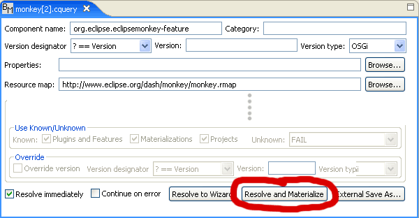

Eclipse Monkey is, of course, a product of its community and you are invited to join the community by contributing bug fixes and new features. To work with the Eclipse Monkey source code, we recommend using the Buckminster tool.
1. Install Buckminster using the Update Manager pointed at the Buckminster
update site
http://download.eclipse.org/technology/buckminster/updates
(and/or read the Buckminster
getting started documentation)
2. Use File > Open File... >
http://www.eclipse.org/dash/monkey/monkey.cquery
3. Choose Resolve and Materialize

4. You now have all the necessary source code in your workspace.
Use Bugzilla to report bugs and request new features. You can also help the project by triaging, fixing, and verifying bugs. Use the Eclipse right-click menu Team > Create Patch... to create patch files for attaching to bugzilla entries.